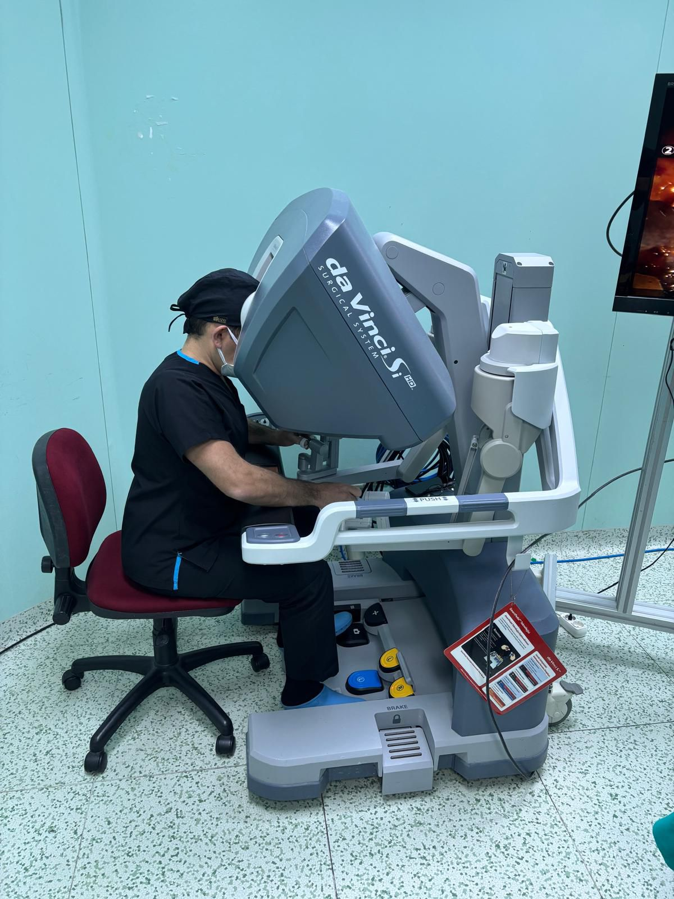
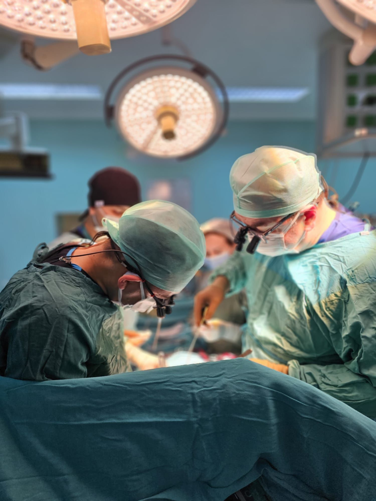

Kalp dört odacıktan oluşmuştur. Kalp delikleri doğumsal bir kalp kusurudur ve kalbin sağ ve sol odacıkları arasında bulunan duvarda kan geçişine izin veren bir açıklık bulunması olarak tanımlanabilir. Sağlıklı bir kalpte bu duvar tamamen kapalıdır ve sağ ve sol odacıklar arasında bir kan geçişi olmaz.
Doğumsal kalp hastalıkları, kalpte doğuştan var olan kalp hastalıklarıdır. Kalp hastalıklarının anne karnında oluşması, oldukça sık görülen bir durumdur. Birçok kalp hastalığı da doğumsal olarak ortaya çıkabilmektedir. Doğumsal kalp hastalıklarının çoğu kanın kalpteki anormal akışından kaynaklanır. Kalp kapakçıkları ve kasları ile ilgili sorunlar da doğumsal olarak görülebilir. Kalp odacıkları arasındaki deliklerde, kalp damarlarında doğumsal anormallikler olabilir. Bazı hastalarda, bu sorunların birkaçı bir arada görülebilir. Dolayısıyla doğumsal kalp hastalıklarının bir ya da birkaç tane değil, onlarca çeşidi olduğunu söyleyebiliriz.
Doğumsal kalp hastalıklarının nedeni genelde bilinmez. Ancak hamilelik sürecini etkileyen bazı durumların doğumsal kalp hastalığı riskini artırdığı bilinmektedir. Doğumsal kalp hastalıkları, genellikle gebeliğin ilk 8 haftası içerisinde oluşur. Bu nedenle gebeliğin ilk 8 haftasında ilaç kullanımı vb. doğal olmayan süreçler, doğumsal kalp hastalıklarının gelişmesine zemin hazırlayabilir. Bu süreçte yoğun röntgen ışınlarına maruz kalmak ve kızamıkçık gibi hastalıklara yakalanmak da bebekte kalp hastalığı riskini artırır.
Genetik kodların da doğumsal kalp hastalıkları üzerinde etkisi olduğu bilinmektedir. Bu yüzden akraba evliliği olanlarda bu riskler daha fazladır. Annede ya da babada kalp hastalığı olması, bebekte doğumsal kalp hastalığı görülme oranını %10’a kadar yükseltmektedir. Eğer kardeşlerde de kalp rahatsızlığı varsa çocukta kalp hastalığı görülme riski 3 – 4 kat fazladır.
Kalp kapakçıklarında, damarlarda, kan akışında ve kalp kaslarındaki birçok hastalık doğumsal olarak ortaya çıkabilir. Doğumsal kalp hastalıklarını “asiyanotik” ve “siyanotik” olmak üzere ikiye ayırabiliriz.
Asiyanotik doğumsal kalp hastalıkları, vücutta morluk yaratmayan kalp hastalıklarıdır. En sık görülen kalp delikleri olan ASD (atriyal septal defekt), VSD (ventriküler septal defekt) ve PDA (patent ductus arteriozus) hastalıkları bu gruptadır. Bu hastalıklarda, kalbin iki kısmı arasında normalde olmaması gereken bir kan akışı vardır. Bu hastalıkların erken döneminde temiz kan kirli kana karıştığı için vücutta morluk oluşmaz. Bu hastalık grubu uzun yıllar belirti vermez. Bu yüzden hastalar farkına varmadan yıllarca yaşarlar ve önemli bir kısmında bir kontrol sırasında hastalık fark edilir. Asiyanotik doğumsal kalp hastalıklarında aynı zamanda kalbin kapaklarında da sorunlar gelişebilmektedir.
Siyanotik doğumsal kalp hastalıkları ise vücudun belirli bölgelerinde (el ve parmak uçları, ayak parmakları, dudaklarda) morluklara neden olan kalp hastalıklarıdır. Bu hastalık grubunda kalpte kirli kan temiz kana bulaşmaktadır. Bu yüzden vücutta morluklar oluşmaktadır. En sık rastlanan siyanotik kalp hastalığı “fallot tetralojisi” denilen hastalıktır. Siyanotik doğumsal kalp hastalıkları hastanın ömrünü kısaltan, oldukça tehlikeli kalp hastalıklarıdır. Zamanında tedavi edilmediği takdirde, siyanotik hastalıkla doğan çocukların çoğunluğu uzun süre yaşayamamaktadır.
Kalpte sağ ve sol atriyum olarak adlandırılan üst iki odacık (kulakçıklar) arasında bulunan duvara atriyal septum adı verilir. Atriyal septumda bir delik bulunması Atriyal Septal Defekt (ASD) olarak adlandırılır.
Akciğerlerden gelen ve sol atriyumdan, sol ventriküle geçmesi gereken temizlenmiş kanın bir kısmı, delik nedeniyle sağ atriyuma kaçar. Kaçağın ne düzeyde olduğu ASD’nin tipine bağlıdır. Birçok küçük ASD büyüme döneminde kendiliğinden kapanabilir. Ancak orta ve büyük seviyelerdeki ASD’ler kendi kendine kapanmaz ve tedavi edilmediğinde kalpte bazı sorunlara yol açabilirler. Kaçağın fazla olduğu durumlar, sağ kalp boşluklarında volüm artışına ve akciğerlerin daha fazla çalışmasına neden olur.
İlerleyen dönemlerde pulmoner hipertansiyon, sağ kalp boşluklarında büyüme, ritim bozuklukları, emboli ve tedavi edilmediği takdirde ölümle sonuçlanan durumlar olabilmektedir.
Bunlar içinde en yaygın olan tip ASD Sekundum’dur.
Atriyal septum, gebeliğin dördüncü haftası ile beşinci haftası arasında oluşur. Bu duvar tamamen büyümezse, bir delik kalır. ASD’nin kesin nedeni bilinmemektedir. Bazen genetik faktörlere bağlı olarak gelişen ASD, bazen de genetik ve çevresel faktörlerin bir kombinasyonunun sonucu olarak ortaya çıkabilir. ASD en sık görülen doğumsal (konjenital) kalp kusurlarından biridir.

Yetişkinlikte, semptomlar çoğu zaman belirgin değildir. Çok yaygın olmamakla birlikte, çabuk yorulma, nefes darlığı, halsizlik, düzensiz kalp atışı, çarpıntı ve bayılma gibi semptomlar görülebilir.Tedavi edilmediği hallerde, kalp yetmezliği, akciğerde basınç artışı (pulmoner hipertansiyon) ve inme gibi durumların yaşanma riski artar.
Kadınların hamilelik dönemi öncesinde genel bir kalp muayenesi yaptırması önem taşır. Farkına varılmamış bir ASD hamilelik döneminde kalp ve akciğer problemlerine yol açabilir ve doğum sonrası komplikasyon riskini arttırabilir. Bu hastalar, hamilelik döneminde doktor kontrolünde olmalıdırlar.
Birçok kişide belirgin bir belirti olmadığından yetişkinlik dönemine kadar delik fark edilmeyebilir. Bu durumda kalp kontrolleri sırasında yapılacak bir görüntüleme işlemi sonucunda teşhisi konulabilir.
Bir ASD’yi teşhis etmek için kullanılan en yaygın test ultrasonla kalbin görüntülenmesi yöntemi olan ekokardiyografidir (EKO). Bunun dışında sağ kalp kateterizasyonu ya da kardiyak MR gibi testlerle de tanı desteklenip tedavi yönlendirilir.
Secundum ASD’lerin yaklaşık % 40 kadarı yetişkinlik dönemine girene kadar kendiliğinden kapanırlar. Eğer kapanmadan kalan delik çok küçükse genellikle herhangi bir girişim gerekmez. Bu gruptaki hastalar düzenli kalp muayenesi yaptırmalı ve bir değişiklik olup olmadığını gözlemlemelidirler.
Ancak delik büyükse kalbin sol tarafından sağ tarafına doğru kan geçişi olur ve akciğerlere daha fazla kan pompalanır. Bu durumda kalbin verimi düşer ve sağ kalpte genişlemeye yol açabilir. Ayrıca inme, atriyal fibrilasyon, pulmoner hipertansiyon, Eisenmenger sendromu gibi durumlar gelişebilir.
Tedaviye karar verirken hastanın hikayesi de önemlidir. Belirgin bir yorgunluk, nefes alma zorluğu, bayılma gibi semptomlar olması durumunda deliğin kapatılması için bir girişim düşünülebilir.
ASD’nin kapatılması için hem cerrahi hem de girişimsel yöntem mevcuttur. Hangi yöntemle yapılacağı deliğin boyutlarına bağlı olarak değişir.
Patent Foramen Ovale (PFO)
“Patent” kelimesi, engellenmemiş veya açık anlamına gelir. Patent foramen ovale (PFO), foramen ovale’nin doğumdan sonra açık kalması anlamına gelir. Toplumun yaklaşık %25-30’unda PFO vardır.
Foramen ovale, fetüsün gelişimi sırasında sağ atriyumdan, sol atriyuma doğru kan akışını sağlar. Annenin rahminde büyüyen bir fetus, ciğerlerini doğuma kadar nefes almak için kullanmaz, bu yüzden dolaşım sistemi yeni doğan bir bebeğinkinden farklıdır. Fetusun ihtiyacı olan oksijenden zengin kanı besleyen akciğerlerin yerine, fetal kalbin foramen ovale olarak adlandırılan üst bölmeler (sağ ve sol atriyum) arasında bir açıklığı vardır. Foramen ovale, doğum öncesi fetal dolaşım sisteminin önemli bir parçasıdır, ancak doğumdan hemen sonra kapanması beklenir. Çoğu durumda, bebek doğduğunda ve akciğerlerini nefes almak için kullanmaya başladığında, kalbin sol tarafında baskıya neden olur. Bu basınç foramen ovale’yi kapatır.
PFO’lu kişilerin çoğunda ömür boyu herhangi bir semptom görülmez. Aslında, PFO genellikle hastalar diğer kalp rahatsızlıklarına yönelik testlere maruz kaldıklarında farkedilmektedir. Başka kalp kusurları olmadıkça, PFO genellikle herhangi bir soruna yol açmaz.
Ancak, bazı çalışmalar gösteriyor ki, bir PFO’nuz varsa, inme geçirme riskiniz daha yüksek olabilir. Bacaklarda oluşan kan pıhtıları kan dolaşımında ilerleyerek kalbe kadar gidebilirler. PFO’su olan kişilerde bu pıhtı, kalbin sağ tarafından sol tarafına doğru geçebilir ve beyne kadar ulaşıp inmeye neden olabilir. Aynı nedenle yaşlı kişilerde kalp krizi geçirme riskini de arttırabilir.
PFO çoğu zaman, hastalar diğer kalp rahatsızlıklarına yönelik testlere maruz kaldıklarında farkedilmektedir. En sık kullanılan tetkik ekokardiyografidir.
PFO’lu kişilerin çoğunun tedaviye ihtiyacı yoktur. Hastalarda bir PFO varsa ve inme veya kalp krizi geçirdiyse, kan pıhtılarının oluşmasını önlemek için antiplatelet tedaviye veya kan inceltici ilaca ihtiyaç duyabilirler.
Tek başına PFO kapatılması için cerrahi bir girişim düşünülmez. Ancak kalple ilgili başka bir problem nedeniyle ameliyat söz konusuysa aynı seansta tamir düşünülebilir.
PFO tedavisinde en yaygın yöntem girişimsel yöntem olan transkateter PFO kapatma işlemidir.